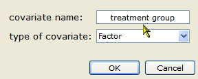

This displays the subgroup summary and plot, as shown below.


 | Performing a Meta-Regression |
This section provides an example that illustrates how to perform a subgroup meta-analysis. The example uses the same data set, meantime.oma, as described in the preceeding section.
First, create a new factor covariate to define the subgroups of studies as follows:

Enter 1, 2, 3, or 4 in the "treatment group" column, according to the time to treatment.
To perform a subgroup meta-analysis:
This displays the subgroup summary and plot, as shown below.
| Performing a Meta-Regression |